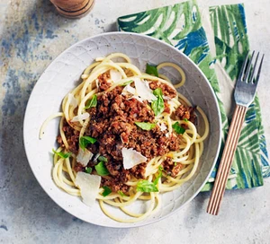

Bolognese Recipe
Home Page
Chilli Con Carne Recipe
Beef Stew Recipe

This recipe looks at how we are going to create a Bolognese. it requires 10 minutes of preparation and 70 minutes of cooking.
Ingredients
- 3 tbsp Olive Oil
- 300g Beef Mince
- 200g Pork Mince
- 2 Large Shallots
- 2-3 Garlic Cloves
- 500g Passata
- 1 tbsp Tomato Puree
- 100ml Red Wine
- 1 tsp Dried Oregano
- 400g Spaghetti
- 50g Parmesan
- Few Basil Leaves
Steps
- Put 1 tbsp of the oil in a large saucepan over a medium-high heat, add the beef and fry until well browned. Tip out into a dish and repeat with 1 tbsp oil and the pork. Tip the pork into the dish with the beef and put the pan back on the heat with the remaining oil. Turn the heat down and cook the shallots for 8-10 mins or until very soft, then add the garlic. Tip the meat back into the pan and add the passata, purée, wine and oregano. Stir everything together, cover and simmer over a low heat, stirring occasionally, for 45 mins.
- Cook the spaghetti following pack instructions, then stir half the parmesan into the Bolognese. Put a spoonful of the pasta water into the sauce to loosen it if it looks too thick, then drain the spaghetti. For a better flavour, tip the pasta onto the sauce, toss everything together to coat, and season well (or serve with the sauce on top). Add the remaining parmesan and a few basil leaves.